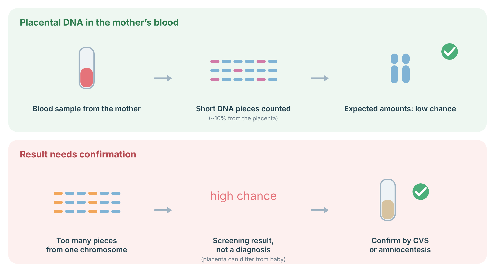
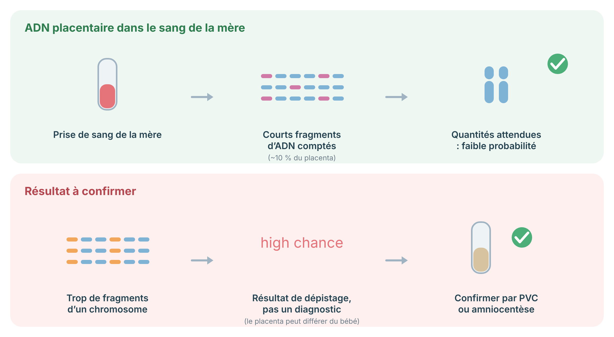

A screening test done in pregnancy from a sample of the pregnant parent’s blood, which carries small pieces of DNA from the placenta. It estimates the chance of certain chromosome conditions — it does not diagnose them.
During pregnancy, small pieces of DNA from the placenta cross into the pregnant parent’s bloodstream and mix with the parent’s own DNA. NIPT reads these pieces from an ordinary blood sample and uses them to estimate the chance that the baby has certain chromosome conditions — most commonly an extra copy of chromosome 21 (Down syndrome), 18, or 13.
The key thing to understand is that NIPT is a screening test, not a diagnosis. It does not give a yes-or-no answer; it tells you whether the chance is higher or lower than average. Because it is just a blood draw from the parent, it carries no risk to the pregnancy, which is part of why it can be offered so early and so widely.
During pregnancy, the mother’s blood contains short fragments of cell-free DNA, about 10% of which come from the placenta. NIPT counts these fragments: if there are more pieces from one chromosome than expected, the chance of a trisomy is high. Because the placenta’s DNA can differ from the baby’s (confined placental mosaicism), a high-chance result is a screening result, not a diagnosis, and should be confirmed by CVS or amniocentesis before decisions are made.

Sources: Rose NC, et al. Genet Med 2022;24:1379–91 (PubMed).
Most of the DNA in the sample is the parent’s; only a smaller share comes from the placenta. The lab measures the overall balance of chromosome pieces across the sample. If the pieces belonging to one chromosome — say chromosome 21 — are present in slightly greater quantity than expected, that suggests the baby may have an extra copy of it.
Many NIPT options also report the baby’s sex and can screen for a few additional conditions, such as changes in the number of sex chromosomes. The accuracy is high for the common trisomies (21, 18, 13) and lower for rarer findings, which is one reason results are always interpreted in context rather than taken at face value.
Beyond the standard panel, an expanded version of the test reads markers across the whole genome rather than only a preset list. Because it looks genome-wide, it can flag extra or missing whole chromosomes (aneuploidies) anywhere, as well as microdeletions — small missing pieces of a chromosome — across all the chromosomes, including some linked to dominant single-gene conditions that often arise from a new (de novo) change in the baby rather than being inherited.1 This expanded testing is an addition, not a substitute: it does not replace the integrated prenatal screening offered through routine care, and a normal result on either does not rule everything out.
A sample of the pregnant parent’s blood is taken, usually from about ten weeks of pregnancy — by then there is normally enough placental DNA in the blood to test. In the lab, the DNA fragments are read and counted, and the balance of chromosome pieces is compared against what is expected in an unaffected pregnancy. From that balance, the lab calculates a chance for each condition screened.
The result usually comes back as either “lower chance” or “higher chance” for each condition, rather than a number. Occasionally the test cannot give a result — often because the share of placental DNA in the sample was too low — and a repeat sample is needed. Because the DNA being read comes from the placenta rather than the baby directly, the placenta and baby very occasionally differ, which is one reason a higher-chance result is confirmed with a diagnostic test before any decision.
Sometimes NIPT cannot give a clear result and comes back as inconclusive (you may also see “no call” or “no result”). This usually comes down to the fetal fraction — the share of the DNA in the sample that came from the placenta. If that share is too low, there simply is not enough placental DNA to read reliably, and the test cannot reach an answer.
Several things can lower the fetal fraction or otherwise make a sample harder to interpret. A higher body weight tends to lower the fetal fraction, because there is more of the parent’s own DNA diluting the placental share. Testing very early in pregnancy can mean the placental share has not yet risen enough. Some inflammatory or autoimmune conditions, and certain medications, can change the mix of DNA in the blood. In a twin pregnancy the picture is more complex, because each placenta contributes its own DNA. And in IVF pregnancies the fetal fraction can read differently, so results may need extra care to interpret.
An inconclusive result is not itself bad news about the baby — it simply means the test could not read the sample well enough. The usual next step is a repeat sample a little later in pregnancy, or a discussion of other options such as diagnostic testing.
NIPT is a simple blood draw, usually offered from about ten weeks of pregnancy. Results typically take one to two weeks. A “lower chance” result is reassuring but does not completely rule a condition out; a “higher chance” result does not mean the condition is certain — it is normally followed by a diagnostic test such as CVS or amniocentesis, which can give a definite answer.
Whether to have NIPT at all is your choice, and it is worth thinking ahead about what different results might mean for you. Your healthcare team or a genetic counsellor can talk through the options before and after the test, at whatever pace feels right.
| Term | In plain language |
|---|---|
| Chromosome | A package your DNA is organised into. You have 46, in 23 pairs. |
| Trisomy | Having three copies of a chromosome instead of the usual two. |
| Screen vs. diagnosis | A screen gives a chance; a diagnostic test gives a clearer yes-or-no. |
| Placenta | The organ that nourishes the baby; its DNA is what NIPT reads. |
| Fetal fraction | The share of DNA in the sample that comes from the placenta; if too low, the test cannot give a result. |
| Microdeletion | A small missing piece of a chromosome, too small to see on older tests. |
| De novo | A change that is new in the baby rather than inherited from a parent. |
| CVS / amniocentesis | Diagnostic procedures that can confirm a result NIPT only suggests. |
This is general education and does not replace a consultation. NIPT is a screening test: a result tells you about chance, and the next step — reassurance, or a diagnostic test — is decided together with your healthcare team.
Un test de dépistage réalisé pendant la grossesse à partir d’un échantillon de sang du parent enceinte, qui contient de petits fragments d’ADN du placenta. Il estime la probabilité de certaines anomalies chromosomiques — il ne les diagnostique pas.
Pendant la grossesse, de petits fragments d’ADN du placenta passent dans le sang du parent enceinte et se mêlent à l’ADN du parent. Le DPNI lit ces fragments à partir d’une simple prise de sang et s’en sert pour estimer la probabilité que le bébé ait certaines anomalies chromosomiques — le plus souvent une copie supplémentaire du chromosome 21 (syndrome de Down), 18 ou 13.
L’essentiel à comprendre est que le DPNI est un test de dépistage, non un diagnostic. Il ne donne pas une réponse par oui ou non; il indique si la probabilité est plus élevée ou plus faible que la moyenne. Comme il s’agit seulement d’une prise de sang chez le parent, il ne comporte aucun risque pour la grossesse, ce qui explique en partie pourquoi il peut être offert si tôt et si largement.
Pendant la grossesse, le sang de la mère contient de courts fragments d’ADN libre, dont environ 10 % proviennent du placenta. Le DPNI compte ces fragments : s’il y a plus de fragments d’un chromosome que prévu, la probabilité de trisomie est élevée. Comme l’ADN du placenta peut différer de celui du bébé (mosaïcisme placentaire confiné), un résultat à probabilité élevée est un résultat de dépistage, pas un diagnostic, et doit être confirmé par PVC ou amniocentèse avant toute décision.

Sources : Rose NC, et al. Genet Med 2022;24:1379–91 (PubMed).
La majeure partie de l’ADN de l’échantillon provient du parent; seule une part plus petite vient du placenta. Le laboratoire mesure l’équilibre global des fragments de chromosomes dans l’échantillon. Si les fragments appartenant à un chromosome — disons le chromosome 21 — sont présents en quantité légèrement plus grande que prévu, cela suggère que le bébé pourrait en avoir une copie supplémentaire.
Plusieurs options de DPNI indiquent aussi le sexe du bébé et peuvent dépister quelques affections supplémentaires, comme des changements du nombre de chromosomes sexuels. La précision est élevée pour les trisomies courantes (21, 18, 13) et plus faible pour les trouvailles plus rares, une des raisons pour lesquelles les résultats sont toujours interprétés en contexte plutôt que pris au pied de la lettre.
Au-delà du panel standard, une version élargie du test lit des marqueurs dans l’ensemble du génome plutôt que sur une seule liste prédéfinie. Comme elle examine tout le génome, elle peut signaler des chromosomes entiers en trop ou manquants (aneuploïdies) n’importe où, ainsi que des microdélétions — de petits morceaux manquants d’un chromosome — sur tous les chromosomes, y compris certaines liées à des maladies monogéniques dominantes qui surviennent souvent à partir d’un nouveau changement (de novo) chez le bébé plutôt que d’être héritées.1 Ce test élargi est un ajout, non un substitut : il ne remplace pas le dépistage prénatal intégré offert dans les soins courants, et un résultat normal à l’un comme à l’autre n’écarte pas tout.
Un échantillon de sang du parent enceinte est prélevé, habituellement dès environ dix semaines de grossesse — il y a alors normalement assez d’ADN placentaire dans le sang pour faire le test. Au laboratoire, les fragments d’ADN sont lus et comptés, et l’équilibre des fragments de chromosomes est comparé à ce qui est attendu dans une grossesse non atteinte. À partir de cet équilibre, le laboratoire calcule une probabilité pour chaque affection dépistée.
Le résultat revient habituellement sous forme de « probabilité plus faible » ou « probabilité plus élevée » pour chaque affection, plutôt qu’un chiffre. Parfois, le test ne peut pas donner de résultat — souvent parce que la part d’ADN placentaire dans l’échantillon était trop faible — et un nouvel échantillon est nécessaire. Comme l’ADN lu provient du placenta plutôt que du bébé directement, le placenta et le bébé diffèrent très rarement, une des raisons pour lesquelles un résultat à probabilité plus élevée est confirmé par un test diagnostique avant toute décision.
Parfois, le DPNI ne peut pas donner de résultat clair et revient comme non concluant (vous verrez aussi « absence de résultat »). Cela tient généralement à la fraction fœtale — la part de l’ADN de l’échantillon qui provient du placenta. Si cette part est trop faible, il n’y a tout simplement pas assez d’ADN placentaire pour une lecture fiable, et le test ne peut pas aboutir à une réponse.
Plusieurs facteurs peuvent abaisser la fraction fœtale ou rendre un échantillon plus difficile à interpréter. Un poids corporel plus élevé tend à abaisser la fraction fœtale, car il y a davantage d’ADN du parent qui dilue la part placentaire. Un test très tôt dans la grossesse peut signifier que la part placentaire n’a pas encore assez augmenté. Certaines affections inflammatoires ou auto-immunes, et certains médicaments, peuvent modifier le mélange d’ADN dans le sang. Dans une grossesse gémellaire, le tableau est plus complexe, car chaque placenta apporte son propre ADN. Et dans les grossesses par FIV, la fraction fœtale peut se lire différemment, de sorte que les résultats peuvent demander une interprétation plus prudente.
Un résultat non concluant n’est pas en soi une mauvaise nouvelle au sujet du bébé — il signifie seulement que le test n’a pas pu lire l’échantillon assez bien. L’étape habituelle est un nouvel échantillon un peu plus tard dans la grossesse, ou une discussion sur d’autres options comme un test diagnostique.
Le DPNI est une simple prise de sang, habituellement offerte dès environ dix semaines de grossesse. Les résultats prennent généralement une à deux semaines. Un résultat « probabilité plus faible » est rassurant mais n’écarte pas complètement une affection; un résultat « probabilité plus élevée » ne signifie pas que l’affection est certaine — il est normalement suivi d’un test diagnostique comme le PVC ou l’amniocentèse, qui peut donner une réponse définitive.
Le choix de faire ou non le DPNI vous appartient, et il vaut la peine de réfléchir à l’avance à ce que différents résultats pourraient signifier pour vous. Votre équipe de soins ou un conseiller en génétique peut discuter des options avant et après le test, au rythme qui vous convient.
| Terme | En langage simple |
|---|---|
| Chromosome | Un paquet dans lequel votre ADN est organisé. Vous en avez 46, en 23 paires. |
| Trisomie | Avoir trois copies d’un chromosome au lieu des deux habituelles. |
| Dépistage vs diagnostic | Un dépistage donne une probabilité; un test diagnostique donne un oui-ou-non plus clair. |
| Placenta | L’organe qui nourrit le bébé; c’est son ADN que lit le DPNI. |
| Fraction fœtale | La part de l’ADN de l’échantillon provenant du placenta; si trop faible, le test ne peut pas donner de résultat. |
| Microdélétion | Un petit morceau manquant d’un chromosome, trop petit pour les tests plus anciens. |
| De novo | Un changement nouveau chez le bébé, non hérité d’un parent. |
| PVC / amniocentèse | Interventions diagnostiques qui peuvent confirmer un résultat que le DPNI ne fait que suggérer. |
Ceci est de l’information générale et ne remplace pas une consultation. Le DPNI est un test de dépistage : un résultat renseigne sur une probabilité, et la prochaine étape — rassurance ou test diagnostique — se décide avec votre équipe de soins.